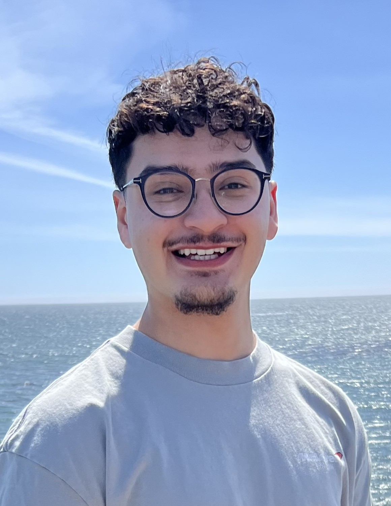

Tariq
Akilah
Third-year mechanical engineering student at UC Irvine with hands-on experience in vehicle and aerodynamic design, seeking engineering design roles in motorsport, automotive, and aerospace.

- Discipline
- 3rd-Year Mechanical Engineering, UC Irvine
- Focus
- Fluid Dynamics / Structural Analysis
- Based
- San Jose, CA
Irvine, CA - Status
- Open for Summer 2027
Experience / 07 entries
Experience
Undertray Aerodynamics
Raised undertray downforce by reprofiling the inlet and diffuser geometry in SolidWorks, validated across pitch and yaw angles in STAR-CCM+.
Canard Roll Control CFD
Ran 244 SimScale CFD cases for Thrust Stack, a canard-controlled airframe built for closed-loop roll stabilization, sweeping deflection from 0.55 to 9.9 degrees and freestream velocity from 33 to 113 m/s. Delivered a 162-point roll torque coefficient dataset adopted directly into the flight control logic.
Two-Stage Rocket Avionics Bay
Led a five-person avionics team through design, integration, and flight test of a two-stage high-power rocket. Cut avionics bay mass 34%, modeled a 1.12-cal stability margin in OpenRocket, and traced two failed launches to a faulty barometric reading and wind-induced tilt before flying the fix to 5,082 ft.
High-Power Rocketry Certification
Designed and FDM-printed a PETG-CF airframe on a Bambu Lab P1S, holding geometric symmetry under simulated flight loads at under 600 grams. Flew a stable Mach 0.747 profile to 4,675 ft and recovered it without critical damage to earn NAR Level 1 certification.
Motorized Trike - Full Vehicle Build
Built a motorized trike from recycled material for under $500 on a five-week deadline. Self-taught MIG welding for the 0.0478 in. wall steel tube chassis, rebuilt a seized 212cc engine, and mated a go-kart rear axle to a bicycle fork with a corrected head angle. Held a 180 lb rider through drifting loads with almost no chassis flex, and ran 40 mph.
Coilover Suspension Assembly
Reverse-engineered a full coilover unit in Fusion 360, from spring and damper through shock body, adjustment ring, and mounts. Ran GD&T-based tolerance analysis across three design revisions to balance fit and clearance in PLA-printed components for smooth, secure adjustment travel.
DAF Tank Redesign - SJSC Wastewater Facility
Redesigned a dissolved air flotation tank against real plant dimensions for a simulated failure case. Delivered the full package: CAD models, updated civil and electrical site plans, and addenda, contracts, and change orders written to industry documentation standards.
Profile
About
I'm a mechanical engineering student at UC Irvine, and most of what I know I learned with either a welder or a mouse in my hand. The first vehicle I built was a motorized trike made from recycled material on a five-week deadline, on a chassis I welded myself after teaching myself MIG. It held a 180 lb rider through drifting loads with almost no chassis flex, and ran 40 mph.
The work has gotten more analytical since then without getting any less hands-on. I'm currently an Aerodynamics Engineer on Anteater Electric Racing, UCI's Formula SAE EV team, running STAR-CCM+ CFD on undertray geometry to chase downforce. This past summer I ran 244 SimScale CFD cases on an active canard-controlled rocket airframe, and before that I led the avionics team that flew a two-stage high-power rocket to 5,082 ft.
I'm looking for summer 2027 roles in aerodynamics, vehicle dynamics, and structures. Happy to talk through any of the work above, or about whatever you're building.
- Education
- B.S. Mechanical Engineering, University of California, Irvine, expected 12/2028 A.S.-T Physics, Mission College, completed 06/2026
- GPA
- 3.88 cumulative
- Citizenship
- US Citizen
- Current team
- Anteater Electric Racing, UCI Formula SAE EV. Aerodynamics Engineer, July 2026 to present.
- CAD & design
- SolidWorks, Fusion 360, Onshape, AutoCAD, GD&T and tolerance analysis
- Simulation
- STAR-CCM+, SimScale, OpenRocket
- Fabrication
- FDM 3D printing, MIG welding, mechanical assembly
- Programming
- MATLAB, C, C++
- Certification
- NAR Level 1 High-Power Rocketry, National Association of Rocketry
- Leadership
- Co-Founder and Vice President, Mission Launch Rocketry. Founder and President, Mission College Muslim Engineering Society. Secretary, Mission College Associated Student Government.
- Honors
- Dean's List, five consecutive semesters. Phi Theta Kappa Honor Society. Honors Program completion.
- Languages
- English, Arabic
Contact
Get in touch
The fastest way to reach me is email. I answer everything.
tarakilah101@gmail.com